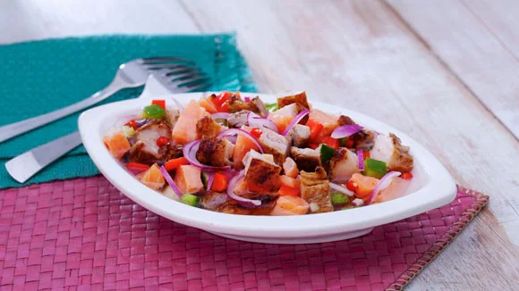
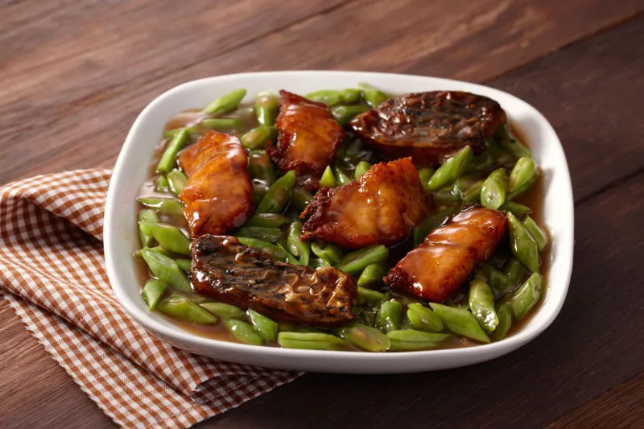
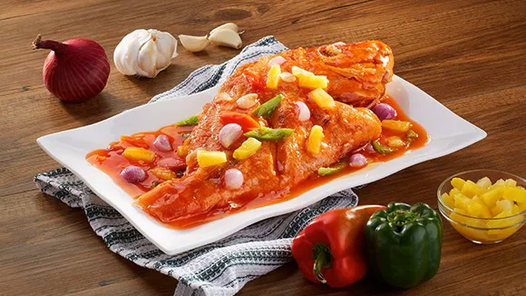
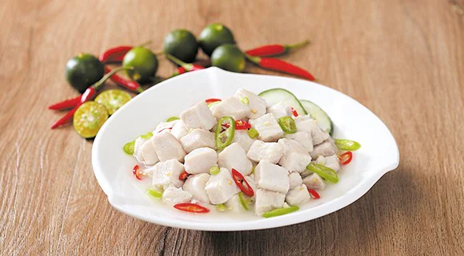

Sinuglaw Salmon

INGREDIENTS
1/4 kilo salmon, cut into small chunks
1/4 kilo pork belly (liempo), cut into strips
2 tbsp. cucumber, seeded and diced
2 tbsp. green bell pepper
1 whole red onion, peeled and thinly sliced (julienned)
2 pieces red chili pepper
Vegetable oil for the wet rub (you can use olive oil)
Knorr Pork Cubes for the wet rub
INSTRUCTIONS
Let’s begin by making a marinade. Start by diluting some Knorr Pork Cubes and then you can begin combining this with olive oil. Then, rub it all over the pork belly. After 5 minutes, char grill the pork belly until cooked through and cut the belly into thin slices that measure around ½” to 1”. Set these aside.
Next, place the salmon and vinegar in a glass bowl or any food grade bowl, and soak them for 8 minutes. IMPORTANT TIP: Don’t use an aluminium bowl in soaking the salmon in with the vinegar because when aluminium and acid come in contact, it creates a chemical reaction and will make the food toxic.
Now, combine the cucumber, green and red bell peppers, and onion. Add the grilled pork belly in and mix thoroughly.
Give your Sinuglaw a good sprinkle of Knorr Liquid Seasoning and add salt and pepper if preferred.
Enjoy Sinuglaw Salmon cold as an appetizer or as a snack, it will surely refresh your day.
Fish and Vegetable Teriyaki

INGREDIENTS
INSTRUCTIONS
Begin by seasoning the fish with salt and pepper.
Get your pan nice and hot over medium high heat. Pour some oil and fry the fish until golden brown.
In another pot, combing soy sauce, brown sugar, ginger, garlic, cornstarch,water and Knorr Chicken Cube. Bring to a simmer for 10 minutes. Add green beans and simmer until cooked through. Fish and Vegetable Teriyaki is a dish you would want to come home to on a lazy friday night.
Sweet and Sour Fish

INGREDIENTS
1/2 kg white fish fillet or whole fish (Cream Dory, Maya-maya, Lapu-lapu, Tilapia, etc)
salt and pepper, to taste
canola oil for deep frying
Optional: 1 pack enoki mushroom
3 cloves garlic, sliced thinly
1 small piece red bell pepper, deseeded and cubed
1 small piece green bell pepper, deseeded and cubed
1 (115g) pack pineapple tidbits
2 tbsp cornstarch dissolved in 1 cup water
Optional: Serve with steamed Bok-Choi on the side
INSTRUCTIONS
There are 2 steps in making this delicious recipe. First, we need to prepare the fish then second, the sauce. Begin by giving the fish and nice seasoning of salt and pepper. If using enoki mushrooms, season mushrooms as well.
Next, prepare 2 bowls for the beaten egg and the other one is for the cornstarch. Dip the fish in the beaten egg then dredge in cornstarch. Prepare a shallow pot with oil and make it nice and hot over medium high heat. Fry the fish in hot oil until nicely browned. Remove and drain on top of a plate lined with paper towel. Set aside. Do this to the seasoned enoki mushrooms as well.
Kilawing Tanguigue

INGREDIENTS
1/2 kg Fresh Tanguigue, dice (around 3/4-inch thick)
2 cups cane vinegar (or coconut vinegar)
1 pc ginger, cut into 2-inch think strips
bird's eye chill, chopped (as needed)
long green chill, chopped (as needed)
Knorr Sinigang sa Sampalok Mix Original (to taste)
INSTRUCTIONS
Get yourself a nice clean bowl and combine tanguigue with a cup of cane vinegar. Mix well and just discard excess liquid.
Get another bowl and mix the remaining 1 cup of cane vinegar with onion, ginger, and chilies. Just add the tanguigue, 3-5 minutes before serving them, then mix well.
Finally, add the Knorr Sinigang sa Sampalok Mix Original and season well according to your preference. And that's our dish. Top this on bread, eat as is or pair with your favourite meat dish. There's something about that sour and salty taste that will make you fall in love with this dish.
Herbed Fish Fillet with Beans and Corn
INGREDIENTS
2 pcs. cream Dory Fillets
1 tsp. fresh thyme, chopped
1 tsp. fresh oregano, chopped
4 cloves garlic, sliced thinly
100 g. young corn pre- cooked and sliced into two
1 pc. red bell pepper, sliced
1 (80g) Knorr Cream of Corn Soup (prepared according to package directions: simmered until thick - sauce consistency)
INSTRUCTIONS
Begin by seasoning the fish fillet in a combination of thyme and oregano. Transfer to a baking dish and set aside.
Next, get a pan and make it nice and hot over medium heat. Melt some butter and throw in the garlic. Sauté until the garlic is brown. Pour the sautéed garlic butter sauce on top of the fish and bake this in a preheated oven of 375F until the fish is cooked through.
Let’s proceed by getting those side dishes ready. Start by getting another pan and making it nice and hot. Over medium heat, pour some oil and throw in the beans, young corn, and bell pepper and sauté until cooked through. Sprinkle some seasoning over.
Here’s a fancy way to present your dish to your family! Place some of the sautéed vegetables on a platter and place the baked fish fillets on top. Pour Knorr Cream of Corn Soup over it and that’s our dish! When you see something as appetizing and fancy as this, you will definitely thank your mom for it! This dish is simply made with love!